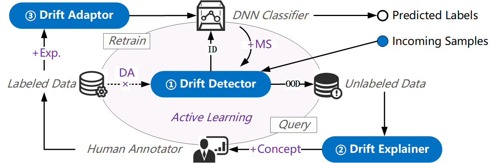
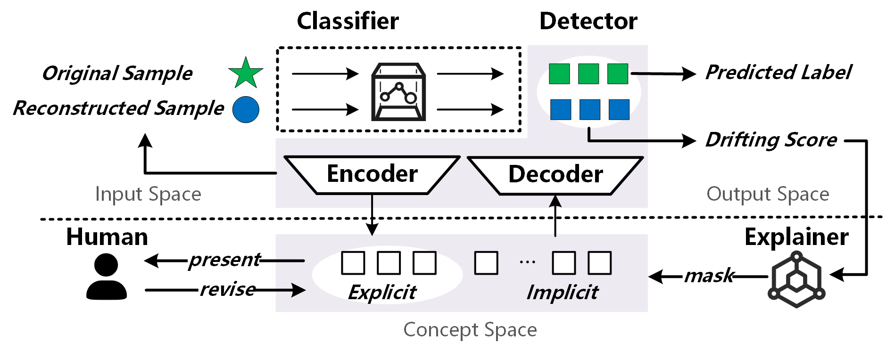
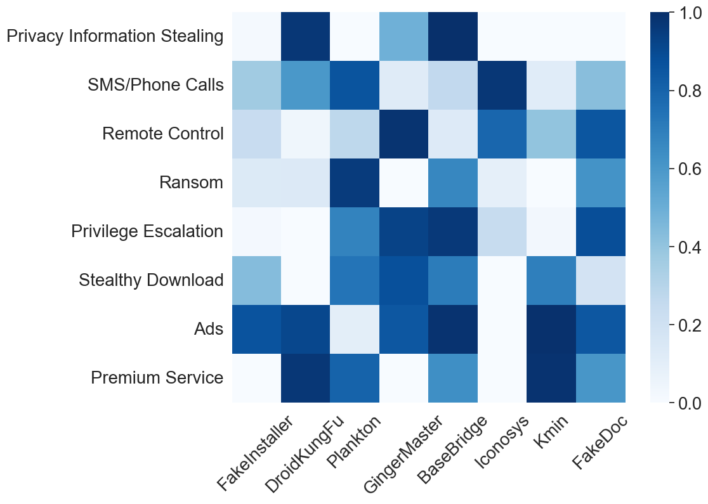
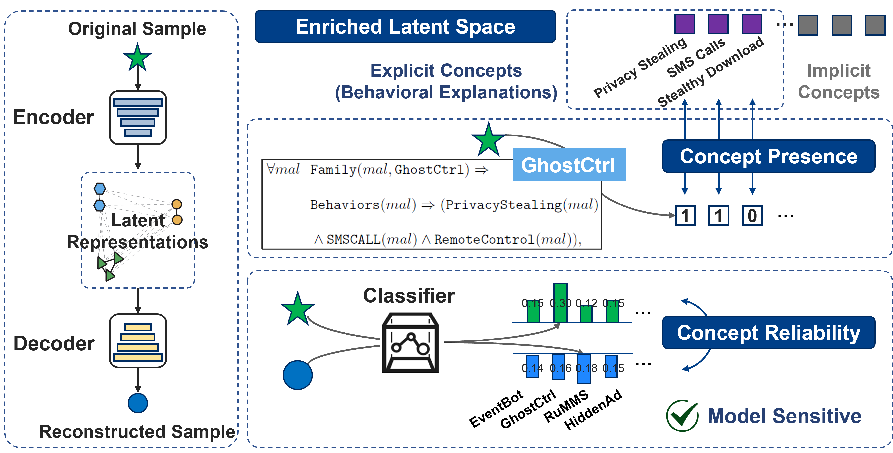
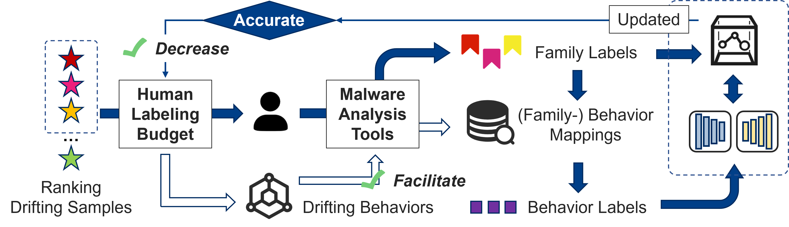
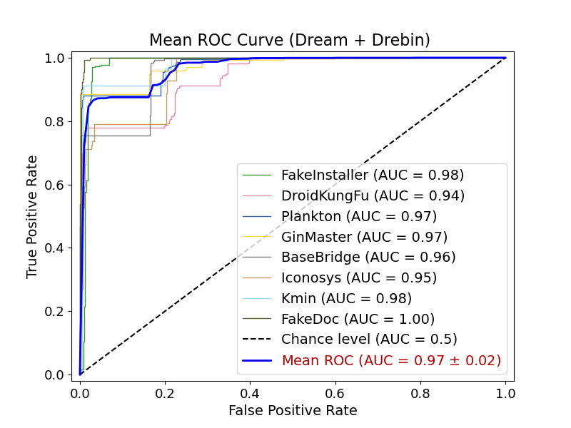
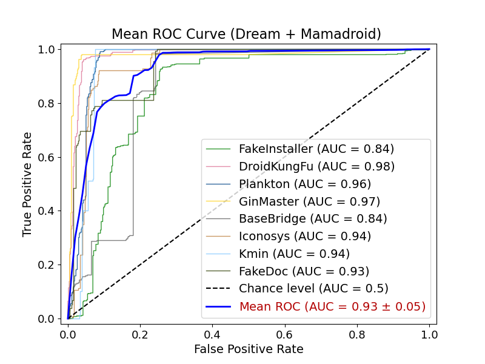
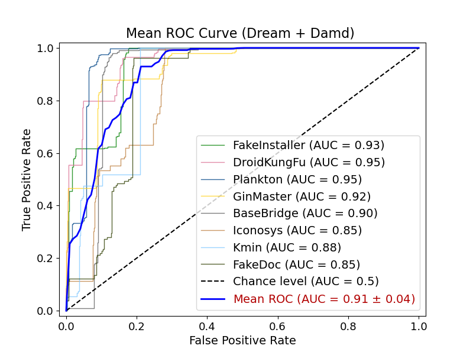

Combating Concept Drift
CCS 2025 · Android Malware Classification · Interactive Presentation
浙江大学 · 区块链与数据安全国家重点实验室
Speaker 1
Slides 1–5
Problem, drift types, old pipeline, two problems, transition
Speaker 2
Slides 6–11
Dream overview, concepts, detection, concept learning, adaptation, intuition
Speaker 3
Slides 12–16
Setup, results, comparison, one-line takeaway, conclusion
71% Mobile Market
Android holds 71% of global mobile OS market. Millions of users = millions of targets.
3M+ New Samples / Month
Over 3 million NEW malware samples discovered every month. Attackers never stop.
Classifiers Degrade Fast
Train on last year's data. Get near-random predictions this year. That's concept drift.
Intra-class Drift 🔄
A known malware family changes — new variants appear.
Example
Xavier malware: 5 different versions in just 8 months. Same family, new tricks.
Mostly affects binary detection: is it malware or not?
Inter-class Drift 🚀
A completely NEW malware family appears. The model has never seen this class.
Example
In 2023 alone, 10 new Android banking malware families were discovered, each with different goals.
Affects multi-class classification: which family is this?
The paper's focus
Dream focuses mainly on INTER-CLASS drift — new malware families appearing. This is the harder problem: the model needs to recognize a family it has NEVER seen before.

DRIFT DETECTION — Find weird samples
Periodically scan new incoming samples. Use statistics or ML to find samples that look "far" from the training data.
DRIFT ADAPTATION — Update the model
Send weird samples to malware experts. Experts label them. Add to training set. Retrain. Simple and straightforward.
new_samples
→ drift_detector()
→ suspicious_subset
→ expert_label()
→ retrain_classifier()
Problem 1: Blind Detector 🔍
Most drift detectors train their OWN model. They ignore what the TARGET classifier actually uses to decide.
Analogy
Like a doctor diagnosing a patient without knowing what the patient already knows. Useless.
Problem 2: Expert Knowledge Wasted 💔
Experts do deep analysis — static analysis, dynamic analysis, behavioral reasoning. But the model only gets a LABEL. All that WHY is lost.
Result
Need TONS of labeled samples to make retraining work. Very expensive.
Dream's Goal
Address BOTH problems: make detection model-sensitive AND make adaptation use expert knowledge fully — not just a label.
Traditional methods usually do this
Detect with a separate detector → send samples to experts → keep only labels → retrain the classifier. Each step is reasonable, but the whole loop wastes information.
Dream changes the whole loop
Detection is tied to the classifier, and adaptation keeps concept-level expert knowledge. So Dream is not just a better detector — it is a better end-to-end updating framework.
Takeaway 1
Concept drift means malware has changed, but the classifier has not kept up. The model still answers, but the answer may no longer be trustworthy.
Takeaway 2
Dream mainly targets inter-class drift: the hard case where a completely new malware family appears and the classifier has never seen it before.
Knows the Classifier
Dream's detector learns what the classifier actually uses. Not something independent. It's model-sensitive.
No Training Data Needed
Old detectors need training data at test time. Dream doesn't. That means: faster, safer, more private deployment.
Explains the Problem
When drift is found, Dream shows WHICH concept caused it. Experts fix the ROOT CAUSE, not just label samples.
Advantage 1
Classifier-aware detection: Dream checks what the real target model cares about, instead of using a detached anomaly view.
Advantage 2
No train-data lookup at test time: this makes deployment faster, lighter, and easier in real environments.
Advantage 3
Concept-guided adaptation: the expert does not only say what the sample is, but also why — so each labeled sample becomes more valuable.
Why This Matters
A malware family can have MULTIPLE behaviors. Two samples in the same family may behave very differently. That's why concepts are more informative than just family labels.

rebuild
Compare!

x_hat = autoencoder(x)
y1 = classifier(x)
y2 = classifier(x_hat)
drift_score = distance(y1, y2)
if drift_score > tau:
alert_expert(x)Predictions AGREE ✓ → Low drift score
Good. The classifier still "gets it" even when looking at a rebuilt version. The concepts used are still reliable.
Predictions DISAGREE ✗ → High drift score
Bad. The rebuilt sample looks different to the classifier. Something genuinely changed in the malware world. → ALERT!
Case A: The classifier gives almost the same prediction on x and x̂. What should Dream think?
Case B: x and x̂ look close in latent space, but the classifier changes its mind a lot. What is the strongest signal?
How to use it live
Do not ask for formal voting. Just pause, let everyone think for a moment, then say: 'If your instinct was A, now let's see why.' That keeps the interaction light and easy to control.
Two Training Signals
Supervised: Align with Classifier
Link latent directions to the classifier's activation patterns. So Dream knows what the classifier FEARS.
Contrastive: Same = Close
Samples with same concept cluster together. Different concepts are pushed apart. Clean separation.
The Full Objective
- L_rec: reconstruction quality
- L_sep: concept separation
- L_pre: concept presence (b0–b9)
- L_rel: classifier agreement on rebuild
Key: L_rel is what makes Dream MODEL-SENSITIVE — it optimizes for classifier agreement, not an independent distance.
L_total = λ0 * L_rec # rebuild input
+ λ1 * L_sep # separate concepts
+ λ2 * L_pre # predict concept presence
+ λ3 * L_rel # preserve classifier decisionOld Way
Expert studies malware.
Expert says: 'this is family X'.
Model gets only a LABEL. All reasoning is lost.
Cost
Need 80–100 labeled samples to make retraining work. Very expensive.
Dream's Way ✨
Dream shows: WHICH concept drifted?
Expert gives: label PLUS concept revision.
Classifier AND detector both update — joint update.
Savings
Same accuracy with 76.6% fewer labeled samples. Far more efficient.

for sample in alerted_samples:
family_label = expert.label(sample)
concept_fix = expert.revise_concepts(sample)
update_classifier(sample, family_label)
update_detector(sample, concept_fix)Not Just “Something Is Weird”
A normal detector may only say: this sample looks unusual. That is useful, but still vague. The analyst still has to do most of the reasoning alone.
Black-box problem
The system gives a score, but not much explanation about which behavior changed and why the classifier may fail.
Dream Tries to Speak the Expert's Language
Dream tries to point to the concept level: maybe the problem is remote control behavior, privacy stealing, or stealth download. That makes the conversation between expert and model much more natural.
Simple summary
Dream tries to make the human analyst and the model speak the same behavior language.
Datasets
- Drebin — 3,317 samples, 8 families, 2010–2012
- Malradar — 2,589 samples, 8 families, 2015–2021
- Extended — 4,410 samples, 180 families, 2015–2020
Malradar has 10 behavioral concepts (b0–b9) labeled for each sample.
Classifiers
- Drebin — binary feature vectors, MLP (100 + 30 hidden)
- Mamadroid — API call pairs → Markov + MLP (1000 + 200 hidden)
- Damd — raw opcode sequences, CNN (2 conv layers, 64 filters)
All are real, widely-used Android malware classifiers.
Why three datasets matter
They cover different years, family scales, and feature representations. So Dream is not tested in only one narrow setting.
Why three classifiers matter
Dream is evaluated on feature-based, API-based, and sequence-based models. That makes the evidence stronger for deployment.
Why hold-out by family matters
This setting directly simulates the real pain point: a new family arrives, and the old classifier must react.
Testing Method: Hold-out by Family
For each family: remove it from training → use ONLY for testing. This simulates a BRAND NEW family appearing. 8 classifiers per dataset = 8 test scenarios each.
Less Labeling
To reach 90% accuracy: Dream = 19 samples. Best old method = 84. Same result.
AUC Boost
vs Transcendent: +11.5%, vs CADE: +12.0%, vs Probability: +13.6%. Consistent.
Per Sample
Detection speed. 3x faster than CADE (1.89ms). 10x faster than Transcendent (5.75ms). Real-time ready.
Intra-class AUC
Also beats HCC on intra-class drift (new variants within same family). Dream works for both types.



Teacher-friendly reading
This is not just 'slightly better'. Dream changes both cost and accuracy at the same time, which is much harder to achieve.
Why 76.6% matters
In practice, expert labeling is the expensive part. Reducing that cost is often more valuable than adding one more point of accuracy.
Why 0.57ms matters
Fast online detection means Dream can be inserted into a real pipeline without becoming the new bottleneck.
Dream = {
"labels_for_90pct_acc": 19,
"best_baseline": 84,
"auc_gain": "+11% ~ +14%",
"latency_ms": 0.57
}| Property | Transcendent | CADE | HCC | Dream ✓ |
|---|---|---|---|---|
| Model-Sensitive Detection | ✗ | ✗ | ✗ | ✓ |
| Data Autonomy (no train data at test) | ✗ | ✗ | ✗ | ✓ |
| Explanatory Adaptation | Partial | ✗ | ✗ | ✓ |
| Works for Both Drift Types | ✗ | Partial | Partial | ✓ |
| Fast Detection | 5.75ms | 1.89ms | — | 0.57ms |
Why Dream is stronger than traditional methods
Traditional methods usually optimize one stage at a time: either better anomaly detection or better retraining. Dream improves the connection between stages, so the whole workflow becomes more efficient.
Practical takeaway
Dream selects better samples, needs fewer labels, gives more explanation, and runs faster online. That combination is the real advantage — not just one higher metric.
What traditional methods miss
- They often rank samples by generic anomaly, not classifier impact.
- They usually throw away concept-level expert reasoning after labeling.
- They may work locally, but the whole update loop stays inefficient.
What Dream adds
- Classifier-aware sample selection.
- Concept-level explanatory adaptation.
- A tighter connection between detection, explanation, and retraining.
Chooses better
Dream's detection is closer to what the classifier actually cares about. So the selected drift samples are more meaningful and more useful for updating the model.
Uses better
Dream does not use only labels during adaptation. It also uses concept-level expert feedback, so each labeled sample carries much richer information.
Smart Detection
Classifier + autoencoder in one system. If the classifier changes its mind on a rebuilt sample — that's drift. No training data needed.
Experts Do More
Not just label — explain WHY. Concept-level feedback goes into the model. Every sample is far more powerful.
Big Real Savings
76.6% less labeling work. 3x faster. Works for new families AND new variants. All in one system.
If the teacher asks 'Why should I care?'
Because Dream improves not just a score, but the whole maintenance loop of a malware classifier.
If the teacher asks 'What is the core novelty?'
The novelty is the bridge: concept-aware detection tied to the classifier, plus concept-level feedback reused during adaptation.
If the teacher asks 'What is the real-world value?'
It lowers human labeling cost while keeping the detection loop fast enough for deployment.
Questions & Discussion
What would you like to ask about Dream?
Detection
How does the concept reliability loss actually work in practice?
Adaptation
How do experts actually provide concept revisions? Is there a UI?
Real World
Could Dream be used for other domains beyond malware?